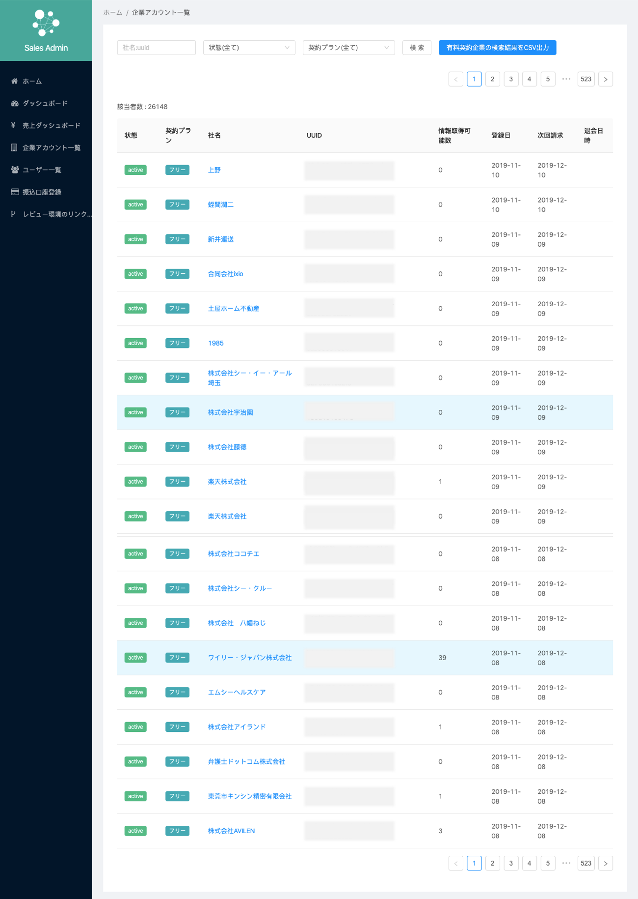
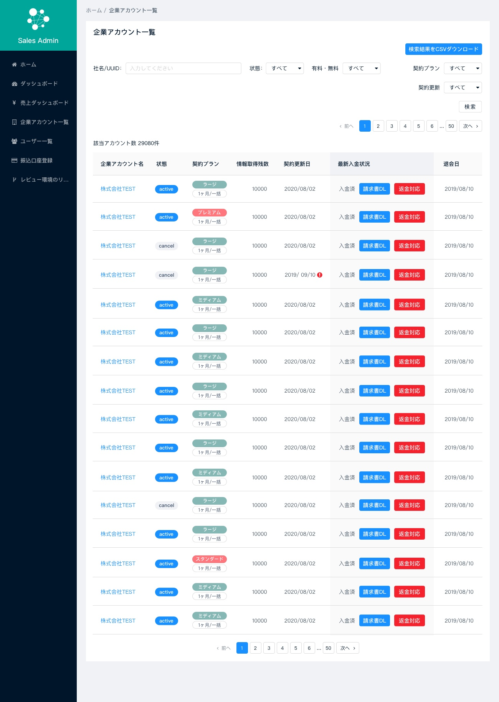
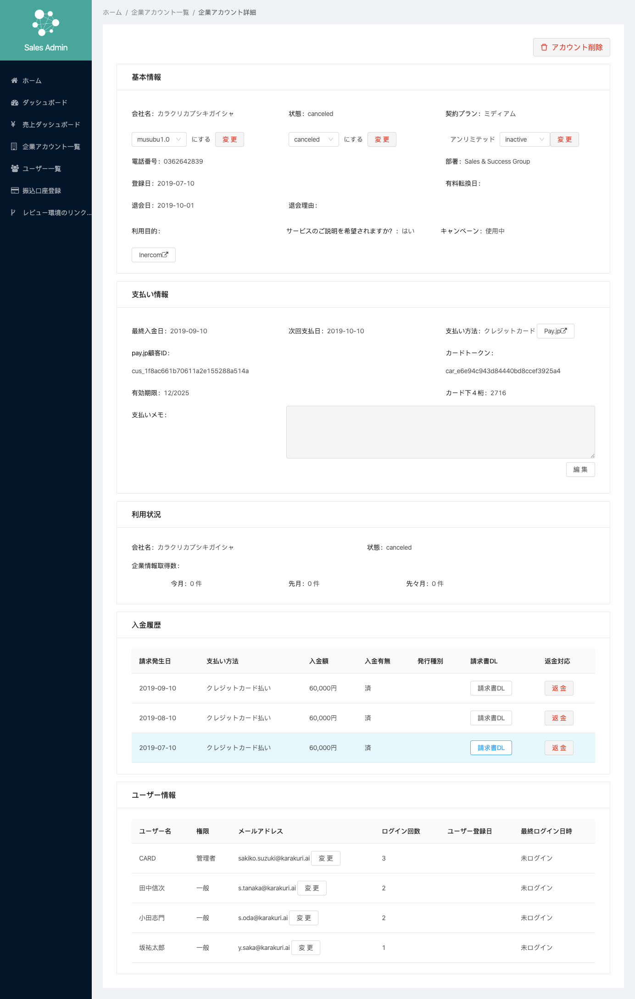
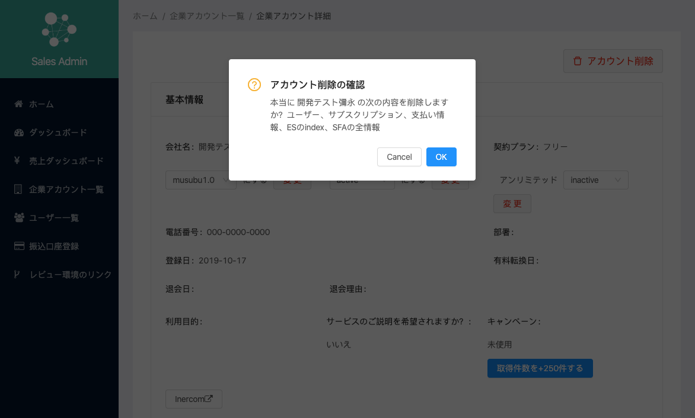
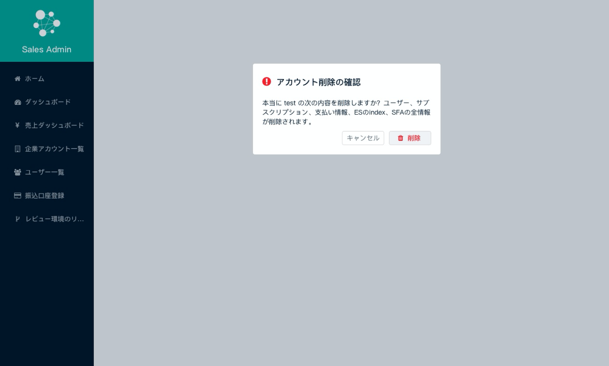

Portfolio
Sales AdminはBaseconnectのMUSUBUの顧客情報などを管理するシステムです。 作成されてからほぼデザインを変えていませんでしたが機能の増加と共にデザインをリニューアル。社内のどの部署の方がみても顧客情報をより分かりやすく探せるようUIのリデザインとコーディングを担当しました。
担当
設計・UIデザイン・コーディング（Sketch / HTML5 / SCSS / Github / Netlify）
１. 企業アカウント一覧
Before
After
課題
企業アカウント一覧では最低限の情報しか見れず、社名をクリックしないと入金情報などが操作・閲覧できない。
セレクトと検索ボタンとcsv出力ボタンが同じ行にあり分かりにくい。
UI改善
・アカウント一覧で入金状況が確認でき、必要な手続きもそのまま行えるようにした。背景に色を入れ重要性を強調。
・最下部のページネイションの位置を中央に変更。
・アイコン・タグ・ページネーションのパーツを自社製品のMUSUBUデザインに寄せ親近感を持って使ってもらえるようにした。
・絞り込みのセレクトを増やし、セレクト・検索ボタン・csv出力ボタンを違う行に分け整列。
コーディングではReact.jsとscssを使い、使用しているAnt.Desigのライブラリコンポーネントをそのまま使用しつつデザインスタイルや配列を変更しました。 またエンジニアがRedaxでデータを渡しやすいコーディングを心がけました。
２. 企業アカウント詳細
Before
After

課題
一つのカードに3列に分けてデータが記載されておりボタンとデータの関連性が分かりにくい。
ボタンデザインが統一されておらずどのボタンがどんなニュアンスを持つか直感的に分かりにくい。
UI改善
・カード内の構成を2列にし変更ボタンがある項目は右に揃えるなどユーザが直感的に操作し変更が行えるようにした。
・重要な項目はタグ付とカラーリングを行いユーザが直感的に項目を探せるようにした。
・カードタイトルにバックグラウンドを入れ纏まりを持たせた。
・変更ボタンは青、返金は赤などボタンの意味によってデザインを統一した。
３. 削除確認アラート
Before
After
課題
使用しているライブラリ(Ant.Desig)のコンポーネントをデザイン調整なしで使用しているため、
アイコン・文言・ボタンのUIに違和感がある。
UI改善
・既存のアイコンではユーザにデータが削除される危険性をあまり伝えられていないと考え、アイコンとアイコンカラーを変更。
・削除実行のボタンをアラート感のあるものに変更。アイコンを追加しユーザがボタンを押すことで何が起こるのか視覚的に分かりやすくした。
・削除ボタンのデザインが統一されておらず分かりにくかったのですべて統一。
・モーダルの2文めの語尾がなくバグのような印象を受けるので「が削除されます」を追加。